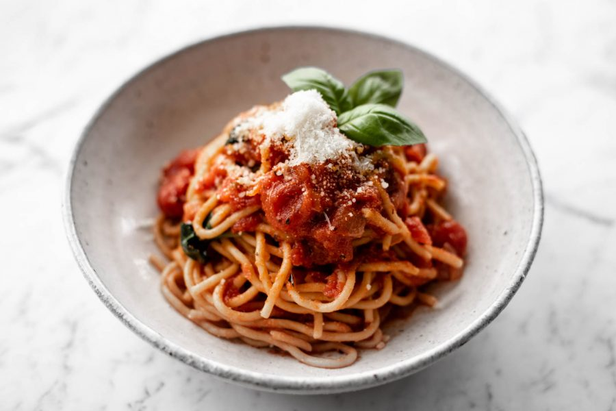

Spaghetti Napoli

If you really like Italian cuisine try this easy recipe for spaghetti Napoli, a traditional Italian pasta dish prepared with spaghetti, tomato and tasty olives.
Ingredients
- Spaghetti Pasta 400g
- Olive oil 3tbsp
- Onion 1
- Garlic 2 cloves
- Celery 1 stick
- Red wine 100ml
- Tomatoes 400g
- Black olives 100g
Instructions
- Bring a large pan of salted water to a boil and cook the spaghetti according to the packet instructions
- Heat the oil in a pan and gently cook the onions until soft.
- Add the garlic, cook for 1 minute, then add the celery.
- Cook for 5 minutes, then add the wine.
- Allow the wine to bubble for 1 minute, then add the tomatoes and cook for about 15 minutes, stirring occasionally.
- Stir in the olives and the sugar and season with salt and pepper.
- Stir the sauce into the drained spaghetti and serve garnished with the basil.
Home page